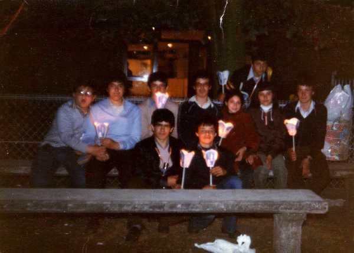

 Es una foto del año 1978 durante la procesión de las velas en la excursión que hicimos a Lourdes en 1º de B.U.P. Los que están conmigo son externos: Por detrás y de Izqda a dcha: Yo, bostezando, Jose Manuel Sampedro, Eusebio Quirce Andonegui, Pedro A. Fernandez Prieto, dos chicas francesas y por detrás Angel Fernandez Viñas. Delante, agachados, Jose Luís Larrañaga Viadero y Solan |